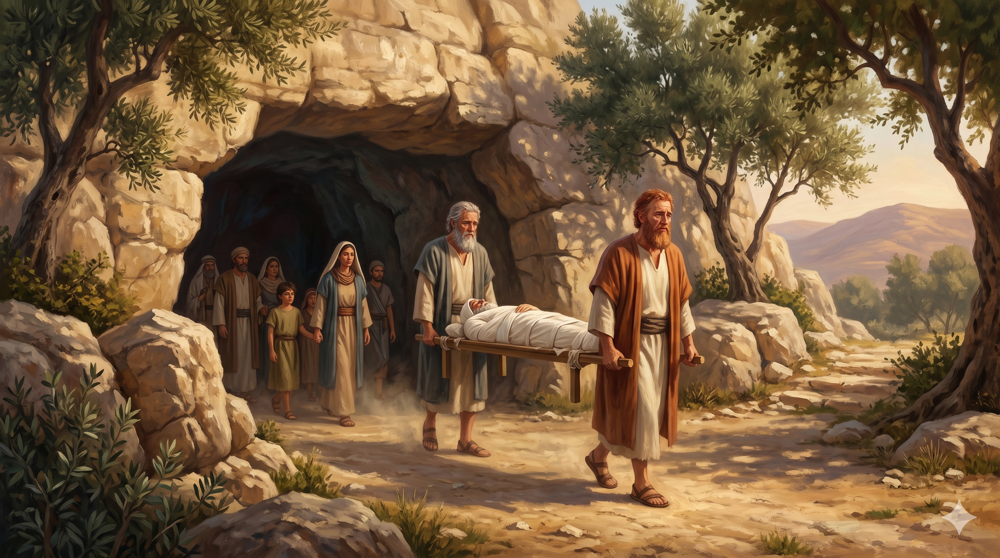

헤브론 마므레 평지의 천막, 백 팔십 세 이삭의 마지막 숨을 거두는 순간 — 에서와 야곱 두 아들이 함께 머리맡에 서 있다
야곱이 기럇아르바의 마므레로 가서 그의 아버지 이삭에게 이르렀으니 기럇아르바는 곧 아브라함과 이삭이 거류하던 헤브론이더라 이삭의 나이가 백팔십 세라 이삭이 나이가 많고 늙어 기운이 다하매 죽어 자기 열조에게로 돌아가니 그의 아들 에서와 야곱이 그를 장사하였더라 — 창세기 35:27–29
이삭의 죽음은 단 세 절로 묘사됩니다. 모리아 산의 침묵하던 소년, 우물을 다시 파던 양보의 사람, 편애로 흔들렸던 아버지 — 이 모든 인생의 마지막이 단출한 세 절 안에 담깁니다. 그러나 그 짧은 기록 안에 깊은 위로가 있습니다. "그의 아들 에서와 야곱이 그를 장사하였더라." 갈라졌던 두 형제가 아버지의 무덤가에서 함께 섰습니다. 야곱이 도망친 후 20년이 흘렀고, 그동안 이삭은 사실상 아들 둘을 모두 잃은 듯한 시간을 견뎌야 했습니다. 그러나 하나님은 그가 눈을 감기 전에 두 아들을 다시 그의 곁으로 돌려보내 주셨습니다. 인생의 깨어진 자리도 끝까지 가면 하나님이 다시 잇대어 주신다는 것 — 이것이 이삭의 마지막 장면이 우리에게 속삭이는 음성입니다.
""기운이 다하매 죽어 자기 열조에게로 돌아가니" — 본문은 이삭의 죽음을 "돌아간다"는 단어로 표현합니다. 헤브론은 곧 막벨라 굴이 있는 곳입니다. 아브라함과 사라가 묻혔고, 후에 리브가와 야곱과 레아가 묻힐 그 자리. 이삭은 단지 흙으로 돌아간 것이 아니라 언약의 가족 가운데로 돌아갔습니다. 한 사람의 죽음은 그가 어디로 돌아가는가에 의해 그 의미가 결정됩니다. 이삭은 평생 아버지의 그늘 아래 조용히 살았습니다. 큰 기적도 큰 영웅담도 없었습니다. 그러나 그의 마지막 자리는 약속의 땅이었고 언약의 무덤이었습니다 — 평범하지만 거룩한 마침이었습니다.

헤브론 막벨라 굴 입구, 흰 천에 싸인 이삭의 시신을 함께 들어 올리는 에서와 야곱 — 갈라졌던 두 형제가 다시 한 곳에 서다
우리는 종종 "큰 일"을 한 인생만 가치 있다고 여깁니다. 그러나 성경은 이삭의 평범하고 조용한 인생을 아브라함, 야곱과 함께 "그 하나님" 안에 둡니다 — "아브라함과 이삭과 야곱의 하나님"으로. 당신의 인생이 화려하지 않아도 괜찮습니다. 우물 하나, 가정 하나, 신앙 하나를 묵묵히 지키는 것 — 그 자체가 하나님의 언약을 다음 세대로 이어 주는 거룩한 다리입니다. 이삭처럼 평생 한 자리에 깊이 뿌리를 내리고 사는 사람을 하나님은 결코 잊지 않으십니다.
또한 이 본문은 화해를 갈망하는 모든 부모에게 위로가 됩니다. 자녀들이 서로 갈라져 있다면, 인생의 끝에 그들이 함께 서기를 기도하십시오. 인간의 시간 안에서는 불가능해 보여도, 하나님은 끝까지 가는 동안 길을 여십니다. 이삭은 살아 생전에 두 아들의 화해를 완전히 보지는 못했을 수 있습니다. 그러나 그가 눈을 감을 때 두 아들이 함께 그의 무덤을 만들었습니다. 우리의 기도는 우리가 살아 있는 동안 다 응답되지 않을 수도 있습니다. 그러나 하나님은 그 기도를 끝까지 들으십니다 — 우리의 마지막 침대 옆에서 응답하실 수도 있습니다.
평범한 인생도 약속의 땅에 묻히면 거룩합니다.
갈라진 자녀가 함께 무덤가에 서는 그 날 — 하나님은 끝까지 일하셨습니다.
당신의 마지막 자리가 "돌아가는" 자리이기를.